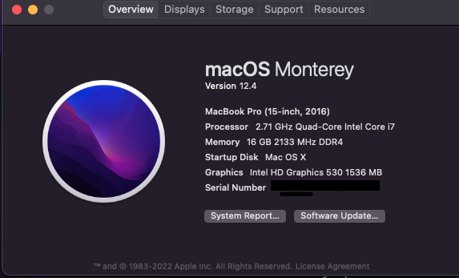

السلام عليكم ورحمة الله وبركاته قمت بتثبيت Monterey macOS على جهاز لاب توب msi GT72S-6QE والمبينة تفاصيل الــــHardware في أدناه وحاليا يعمل بصورة اعتيادية عدا النواقص التالية:- ١ - الواي فاي نوع Killer WL n/a/ac 1535 بحثت كثيرا عن حلول لها من دون جدوى.((أستخدمت بدلا منها خارجية نوع TL-WN725 Ver 3.0 )) ٢ - الصوت لايخرج في السماعات الداخلية ولكن عبر البلوتوث و منافذ الـــDigital Out - Line Out طبيعي. ٣ - عبر منفذ الــHDMI لايمكن العرض على شاشة خارجية فقط في بداية تحميل النظام وبعدها يتوقف العرض. ٤ - الويب كام الداخلية تجاهلتها عندي بدلا منها ويب كام خارجية LogiTech - C920. النقاط ٢ ٣ ٤ لست بصددها و ان شاء الله عند تيسر الوقت سأجد لهن حلا… المهم النقطة ١ مشكلة الوايرليس الداخلية…هنا اريد أن اسأل هل هنا من مر بمثل هذه المشكلة ووجد لها حلا…؟ ملف الـــ EFI كاملا بتفاصيله على الرابط التالي:- https://drive.google.com/drive/folders/1SO-IAomn9NOLYW66vA0rIk32Z75x-w5V?usp=sharing
مواصفات الجهاز:- MSI GT 72S 6QE Devices Report
-
C P U: Intel Core i7-6820HK Brand Name:Intel(R)Core™ i7-6820HK CPU @ 2.70GHz QuadCore Intel Core i7-6820HK, 2700 MHz (27 x 100)
-
Memory:DDR4 SDRAM Speed:1066.7 MHz (DDR4-2133 / PC4-17000) DDR4-1333, DDR4-1600, DDR4-1866, DDR4-2133 SDRAM
-
Motherboard Chipset Intel CM236 (Skylake PCH-H) MSI GT72/GT72S (MS-1782)
-
BIOS Type:AMI UEFI Version:E1782IMS.122
-
Intel(R) Xeon(R) E3 - 1200/1500 v5/6th Gen Intel(R) Core™ Host Bridge/DRAM Registers - 1910
-
Video Chipset: Intel HD Graphics 530 Video Card:Intel HD Graphics 530 (Skylake-H GT2) [S0/R0] [MSI]
-
High Definition Audio Codec:RealTek ALC899 Intel Skylake PCH-H - High Definition Audio Intel(R) Display Audio
-
Qualcomm Atheros QCA61x4 Bluetooth 4.1 Interface Type:Bluetooth Ethernet
-
WiFi:Killer Wireless-n/a/ac 1535 Wireless Network Adapter Interface Type:802.11 Wireless Ethernet Vendor Description:Microsoft
-
LAN Network Card:Qualcomm/Atheros e2400 PCI-E Gigabit Ethernet Controller Killer E2400 Gigabit Ethernet Controller Vendor:Qualcomm Atheros Ar81xx series PCI-E Ethernet Controller
-
WDC WDS100T2B0A:Intel Skylake PCH-H DT/WS-SATA AHCI Controller[D1]
-
Toshiba AIS NVMe SSD Controller-THNSN5128GPU7 TOSHIBA
-
MATSHITA BD-MLT UJ272 Device Type:BD-RE
-
USB:Atheros Communications Qualcomm Atheros Valkyrie BootROM Name:Atheros Communications Atheros QCA61x4 Bluetooth 4.1 USB Device Qualcomm Atheros QCA61x4 Bluetooth 4.1
-
Battery: Device Name:BIF0_9 Manufacturer Name: MSI
